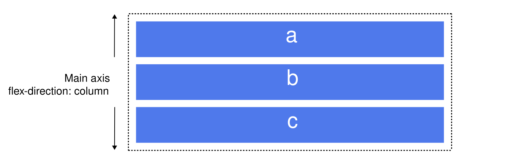
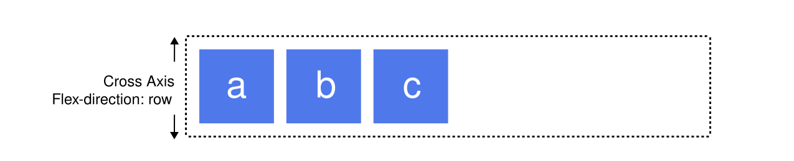
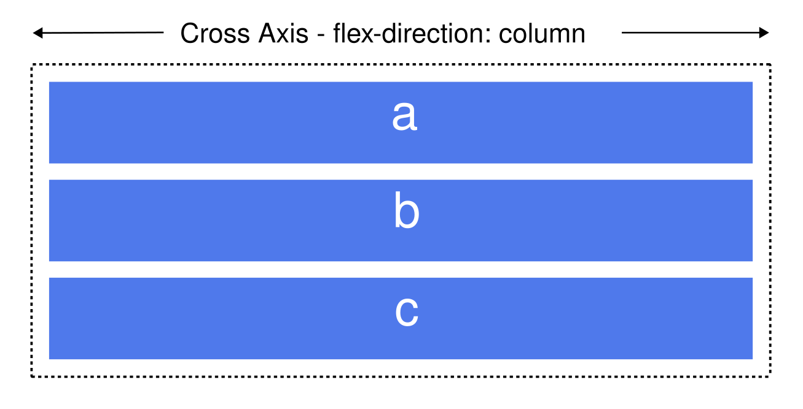
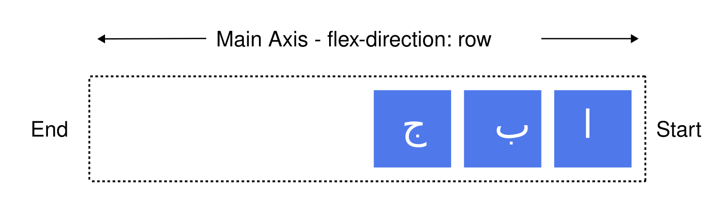
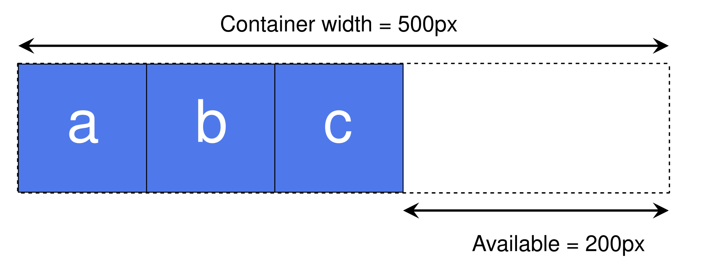

Basic concepts of flexbox
The flexible box layout module (usually referred to as flexbox) is a one-dimensional layout model for distributing space between items and includes numerous alignment capabilities. This article gives an outline of the main features of flexbox, which we will explore in more detail in the rest of these guides.
When we describe flexbox as being one-dimensional we are describing the fact that flexbox deals with layout in one dimension at a time — either as a row or as a column. This can be contrasted with the two-dimensional model of CSS Grid Layout, which controls columns and rows together.
The two axes of flexbox
When working with flexbox you need to think in terms of two axes — the main axis and the cross axis. The main axis is defined by the flex-direction property, and the cross axis runs perpendicular to it. Everything we do with flexbox refers back to these axes, so it is worth understanding how they work from the outset.
The main axis
The main axis is defined by flex-direction, which has four possible values:
- row
- row-reverse
- column
- column-reverse
Should you choose row or row-reverse, your main axis will run along the row in the inline direction.
Main axis-flex direction:row
Choose column or column-reverse and your main axis will run in the block direction, from the top of the page to the bottom.

The cross axis
The cross axis runs perpendicular to the main axis. Therefore, if your flex-direction (main axis) is set to row or row-reverse the cross axis runs down the columns.

If your main axis is column or column-reverse then the cross axis runs along the rows.

Start and end lines
Another vital area of understanding is how flexbox makes no assumption about the writing mode of the document. Flexbox doesn't just assume that all lines of text start at the top left of a document and run towards the right-hand side, with new lines appearing one under the other. Rather, it supports all writing modes, like other logical properties and values.
You can read more about the relationship between flexbox and writing modes in a later article; however, the following description should help explain why we do not talk about left and right and top and bottom when we describe the direction that our flex items flow in.
If the flex-direction is row and I am working in English, then the start edge of the main axis will be on the left, the end edge on the right.

In both cases the start edge of the cross-axis is at the top of the flex container and the end edge at the bottom, as both languages have a horizontal writing mode.
After a while, thinking about start and end rather than left and right becomes natural, and will be useful to you when dealing with other layout methods such as CSS Grid Layout which follow the same patterns.
The flex container
An area of a document that is laid out using flexbox is called a flex container. To create a flex container, set the area's display property to flex. When we do this, the direct children of that container become flex items. You can explicitly control whether the container itself is displayed inline or in block formatting context using inline flex or inline-flex for inline flex containers or block flex or flex for block level flex containers.
Initial values
As with all properties in CSS, some initial values are defined, so the contents of a new flex container will behave in the following way:
- Items display in a row (the flex-direction property's default value is row).
- The items start from the start edge of the main axis.
- The items do not stretch on the main dimension but can shrink (a flex-item's flex-grow property's default value is 0 and its flex-shrink property's default value is 1).
- The items will stretch to fill the size of the cross-axis (the align-items property's default value is stretch).
Multi-line flex containers with flex-wrap
While flexbox is a one dimensional model, it is possible to make flex items wrap across multiple lines. If you do this, you should consider each line as a new flex container. Any space distribution will happen across each line, without reference to the previous or subsequent lines.
To cause wrapping behavior add the property flex-wrap with a value of wrap. Now, if your items are too large to all display in one line, they will wrap onto another line. The live sample below contains items that have been given a width. The total width of the items is too wide for the flex container. As flex-wrap is set to wrap, the items wrap across multiple lines. If you set it to nowrap, which is the initial value, they will shrink to fit the container. They shrink because they are using initial flexbox values, including flex-shrink: 1, that allows items to shrink. Using nowrap would cause an overflow if the items were not able to shrink, or could not shrink small enough to fit.
Find out more about wrapping flex items in the guide Mastering wrapping of flex items.
The flex-flow shorthand
You can combine the two properties flex-direction and flex-wrap into the flex-flow shorthand.
In the live sample below, try changing the first value to one of the allowable values for flex-direction - row, row-reverse, column or column-reverse, and also change the second to wrap and nowrap.
Properties applied to flex items
To control the inline-size of each flex item, we target them directly via three properties:
We will take a brief look at these properties below, but if you want more comprehensive information, take a look at the Controlling ratios of flex items on the main axis guide.
Before we can make sense of these properties we need to consider the concept of available space. What we are doing when we change the value of these flex properties is to change the way that available space is distributed among our items. This concept of available space is also important when we come to look at aligning items.
If we have three 100 pixel-wide items in a container which is 500 pixels wide, then the space we need to lay out our items is 300 pixels. This leaves 200 pixels of available space. If we don't change the initial values then flexbox will put that space after the last item.

If we instead would like the items to grow and fill the space, then we need to have a method of distributing the leftover space between the items. The flex properties that we apply to the items themselves, enable dictating how that available space should be distributed among the sibling flex items.
The flex-basis property
The flex-basis is what defines the size of that item in terms of the space it leaves as available space. The initial value of this property is auto — in this case the browser looks to see if the item has a size. In the example above, all of the items have a width of 100 pixels. This is used as the flex-basis.
If the items don't have a size then the content's size is used as the flex-basis. This is why when we just declare display: flex on the parent to create flex items, the items all move into a row and take only as much space as they need to display their contents.
The flex-grow property
With the flex-grow property set to a positive integer, if there is available space, the flex item can grow along the main axis from its flex-basis. Whether the item stretches to take up all the available space on that axis, or just a portion of the available space depends on if the other items are allowed to grow too and the value of their flex-grow properties.
Each item with a positive value consumes a portion of any available space based on their flex-grow value. If we gave all of our items in the example above a flex-grow value of 1 then the available space in the flex container would be equally shared between our items and they would stretch to fill the container on the main axis. If we give our first item a flex-grow value of 2, and the other items a value of 1 each, there are a total of 4 parts; 2 parts of the available space will be given to the first item (100px out of 200px in the case of the example above) and 1 part each the other two (50px each out of the 200px total).
The flex-shrink property
Where the flex-grow property deals with adding space in the main axis, the flex-shrink property controls how it is taken away. If we do not have enough space in the container to lay out our items, and flex-shrink is set to a positive integer, then the item can become smaller than the . As with flex-grow, different values can be assigned in order to cause one item to shrink faster than others — an item with a higher value set for flex-shrink will shrink faster than its siblings that have lower values.
An item can shrink down to its min-content size. This minimum size is taken into account while working out the actual amount of shrinkage that will happen, which means that flex-shrink has the potential to appear less consistent than flex-grow in behavior. We'll therefore take a more detailed look at how this algorithm works in the article Controlling ratios of items along the main axis.
Note: These values for flex-grow and flex-shrink are proportions. Typically if we had all of our items set to flex: 1 1 200px and then wanted one item to grow at twice the rate, we would set that item to flex: 2 1 200px. However you could also use flex: 10 1 200px and flex: 20 1 200px if you wanted.
Shorthand values for the flex properties
You will very rarely see the flex-grow, flex-shrink, and flex-basis properties used individually; instead they are combined into the flex shorthand. The flex shorthand allows you to set the three values in this order — flex-grow, flex-shrink, flex-basis.
The live sample below allows you to test out the different values of the flex shorthand; remember that the first value is flex-grow. Giving this a positive value means the item can grow. The second is flex-shrink — with a positive value the items can shrink, but only if their total values overflow the main axis. The final value is flex-basis; this is the value the items are using as their base value to grow and shrink from.
There are also some predefined shorthand values which cover most of the use cases. You will often see these used in tutorials, and in many cases these are all you will need to use. The predefined values are as follows:
- flex: initial
- flex: auto
- flex: none
- flex: positive-number
The initial value is a CSS-wide keyword that represents the initial value for a property. Setting flex: initial resets the item to the initial values of the three longhand properties, which is the same as flex: 0 1 auto. The initial value of flex-grow is 0, so items will not grow larger than their flex-basis size. The initial value of flex-shrink is 1, so items can shrink if they need to rather than overflowing. The initial value of flex-basis is auto. Items will either use any size set on the item in the main dimension, or they will get their size from the content size.
Using flex: auto is the same as using flex: 1 1 auto; this is similar to flex: initial, except that the items can grow and fill the container as well as shrink if needed.
The shorthand you often see in tutorials is flex: 1 or flex: 2 and so on. This is the same as writing flex: 1 1 0 or flex: 2 1 0 and so on, respectively. The items get minimum size due to flex-basis: 0 and then proportionally grow to fill the available space. In this case, the flex-shrink value of 1 is redundant because the items start with minimum size — they're not given any size that could cause them to overflow the flex container.
Alignment, justification and distribution of free space between items
A key feature of flexbox is the ability to align and justify items on the main- and cross-axes, and to distribute space between flex items. Note that these properties are set on the flex container, not on the items themselves.
align-items
The align-items property aligns all the flex items on the cross axis.
The initial value for this property is stretch and is why flex items stretch to the height of the flex container by default (or the width if flex-direction is set to column or column-reverse ). This height may come from the tallest item in the container or the size set on the flex container itself.
You could instead set align-items to flex-start, or simply start, in order to make the items line up at the start of the flex container, flex-end, or just end, to align them to the end, or center to align them in the center. Try this in the live sample — I have given the flex container a height in order that you can see how the items can be moved around inside the container. See what happens if you set the value of align-items to:
- stretch
- flex-start
- flex-end
- start
- end
- center
- baseline
- last baseline
The align-items is set on the flex container and impacts all the flex items. If you want to align a flex item differently from others, you can set the on the flex item.
justify-content
The justify-content property is used to align the items on the main axis, the direction in which flex-direction has set the flow. The initial value is flex-start which will line the items up at the start edge of the container, but you could also set the value to flex-end to line them up at the end, or center to line them up in the center.
You can also use the value space-between to take all the spare space after the items have been laid out, and share it out evenly between the items so there will be an equal amount of space between each item. To cause an equal amount of space on the right and left (or top and bottom for columns) of each item use the value space-around. With space-around, items have a half-size space on either end. Or, to cause items to have equal space around them use the value space-evenly. With space-evenly, items have a full-size space on either end.
Try the following values of justify-content in the live sample:
- start
- end
- left
- right
- normal
- flex-start
- flex-end
- center
- space-around
- space-between
- space-evenly
- stretch
The article Aligning items in a flex container explores these properties in more depth, in order to have a better understanding of how they work. These basic examples, however, are useful in the majority of use cases.
justify-items
The justify-items property is ignored in flexbox layouts.
place-items and place-content
The place-items property is a shorthand property for align-items and justify-items. If set on a flex container, it will set the alignment but not the justification, as justify-items is ignored in flexbox.
There is another shorthand property, place-content, that defines the align-content and justify-content properties. The align-content property only affects flex containers that wrap, and is discussed in Aligning items in a flex container.
Next steps
After reading this article you should have an understanding of the basic features of flexbox. In the next article, we will look at how this specification relates to other parts of CSS.